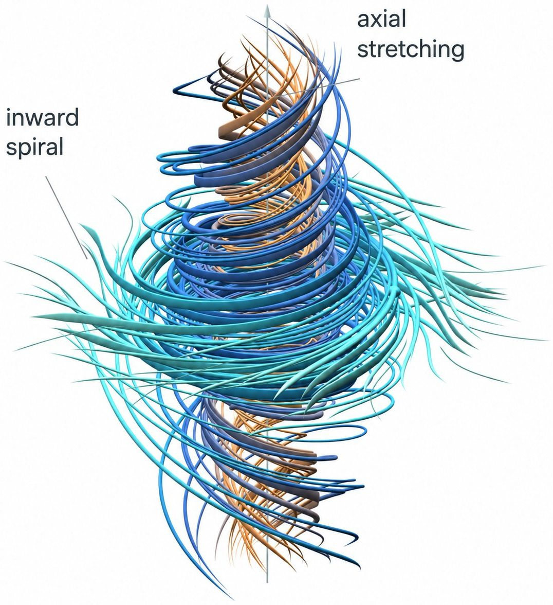
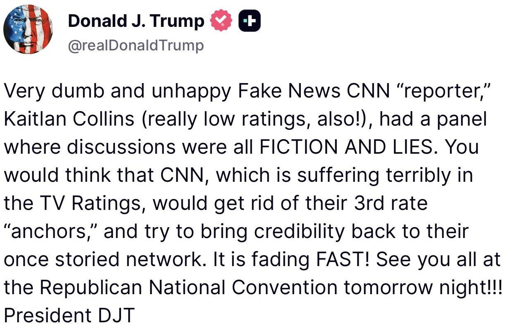

JUST IN: 🇺🇸🇷🇺 President Trump and Russian President Putin hold one-hour phone call focused on ending the war in Ukraine.
JUST IN: @Visa says stablecoin card programs are exploding, 160+ live worldwide, payment volume up 200% YoY, and settlement volume now running at a $20B annualized rate, 15x higher than a year ago.
🇨🇭 NEW: UBS and eight other Swiss firms begin testing CHFD, a Swiss franc-backed stablecoin.
Circle has signed an agreement to acquire @tazapay, a cross-border payments company supporting businesses across 100+ markets.
Tazapay brings a payments-native team, 60+ banking and fintech partners, and meaningful stablecoin payment volume, with more than 60% of its volume running on stablecoins as of July 31, 2026.
Together, we’re working to expand stablecoin-powered payment infrastructure for businesses moving value globally.
Circle has signed an agreement to acquire @Tazapay. 60+ banking and fintech partners. 100+ payment markets. 60%+ stablecoin TPV as of July 31, 2026. This accelerates the breadth and depth of CPN globally.
We’re sharing a solution to the Navier-Stokes Millennium Prize Problem, one of the deepest problems at the frontier of mathematics.
The proof was produced by a group of agents, using an OpenAI next-generation model significantly more capable than GPT-6 Astra.
The problem concerns whether the description of smooth three-dimensional fluid motion modeled by the Navier-Stokes equations can break down. It has remained unresolved for roughly 90 years.

BREAKING: OpenAI reveals a 10,000-agent AI swarm solved the Navier–Stokes problem in 88 hours, using 130 billion output tokens to crack one of mathematics’ most famous unsolved problems.
WHEELS UP: @SecRubio departs for Colombia, Ecuador, & Peru.
Under Operation Economic Outcast, we promised severe consequences for those providing financial lifelines to the Iranian regime. Today, we followed through on that promise with sanctions on companies that continue to support Mahan Air. Let this be a warning to anyone doing business with Iran’s remaining airlines, all of which we sanctioned today: You are at risk of being cut off from the global financial system.

Treasury Secretary Scott Bessent says the US will be moving to automatic enrollment in Trump accounts for everyone eligible, with an announcement formally coming at the end of September or beginning of October
BESSENT SAYS THE US CAN USE ITS BALANCE SHEET AS A FOREIGN-POLICY TOOL AND CLAIMS HE NOW HAS “ASYMMETRIC INFO,” SIGNALING A MORE ACTIVE US ROLE IN CURRENCY POLICY.